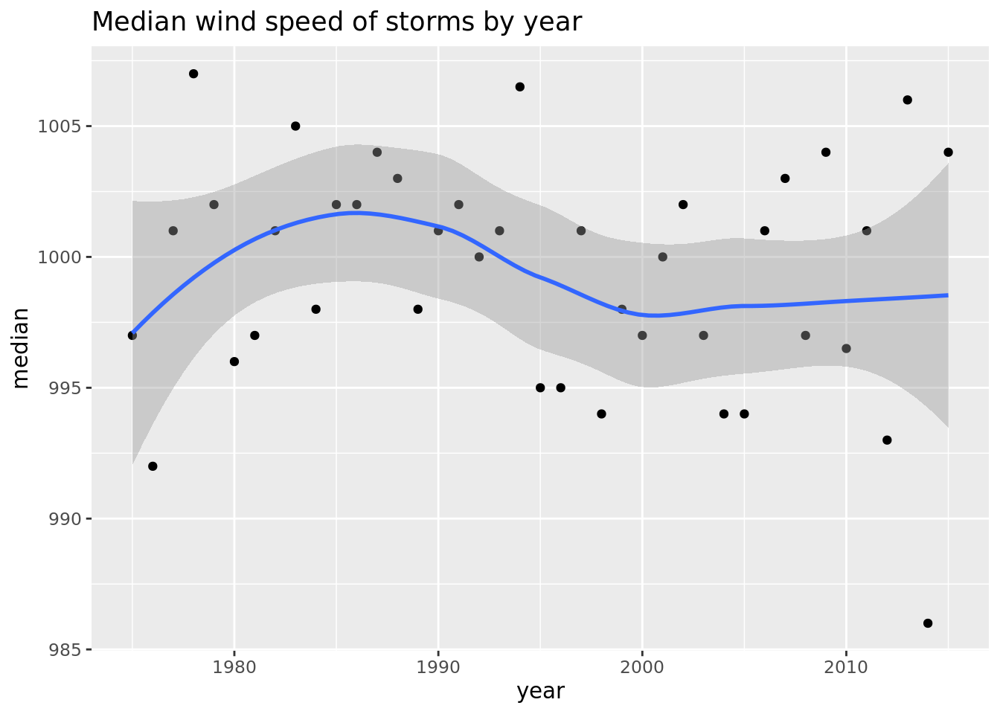

Chapter 7 Tidyverse tools
library(tidyverse)7.1 Select
7.1.1 Original Data Set
head(storms)## # A tibble: 6 x 13
## name year month day hour lat long
## <chr> <dbl> <dbl> <int> <dbl> <dbl> <dbl>
## 1 Amy 1975 6 27 0 27.5 -79
## 2 Amy 1975 6 27 6 28.5 -79
## 3 Amy 1975 6 27 12 29.5 -79
## 4 Amy 1975 6 27 18 30.5 -79
## 5 Amy 1975 6 28 0 31.5 -78.8
## 6 Amy 1975 6 28 6 32.4 -78.7
## # … with 6 more variables: status <chr>,
## # category <ord>, wind <int>,
## # pressure <int>, ts_diameter <dbl>,
## # hu_diameter <dbl>You can use (data source, columns)
dplyr::select(storms, name, pressure)## # A tibble: 10,010 x 2
## name pressure
## <chr> <int>
## 1 Amy 1013
## 2 Amy 1013
## 3 Amy 1013
## 4 Amy 1013
## 5 Amy 1012
## 6 Amy 1012
## 7 Amy 1011
## 8 Amy 1006
## 9 Amy 1004
## 10 Amy 1002
## # … with 10,000 more rowsWe can also do (data source, -columns) to choose all but that column, i.e.:
dplyr::select(storms, -name)## # A tibble: 10,010 x 12
## year month day hour lat long status
## <dbl> <dbl> <int> <dbl> <dbl> <dbl> <chr>
## 1 1975 6 27 0 27.5 -79 tropi…
## 2 1975 6 27 6 28.5 -79 tropi…
## 3 1975 6 27 12 29.5 -79 tropi…
## 4 1975 6 27 18 30.5 -79 tropi…
## 5 1975 6 28 0 31.5 -78.8 tropi…
## 6 1975 6 28 6 32.4 -78.7 tropi…
## 7 1975 6 28 12 33.3 -78 tropi…
## 8 1975 6 28 18 34 -77 tropi…
## 9 1975 6 29 0 34.4 -75.8 tropi…
## 10 1975 6 29 6 34 -74.8 tropi…
## # … with 10,000 more rows, and 5 more
## # variables: category <ord>, wind <int>,
## # pressure <int>, ts_diameter <dbl>,
## # hu_diameter <dbl>7.1.2 Other select functions:
| Function call | Description |
|---|---|
| - | select everything but |
| : | select range |
| contains() | Select columns whose name contains a character string |
| ends_with() | Select columns whose name ends with a string |
| everything() | Select every column |
| matches() | Select columns who name matches a regular expression |
| num_range() | Select columns named x1,x2,x3… |
| one_of() | Select columns whose names are in a group of names |
| starts_with() | Select columns whose name starts with a character string |
7.2 Filter
This will apply a test to every row in the data frame and return just the rows that pass the test. You can combine by putting a comma in the state. It acts as AND.
dplyr::filter(storms, wind >= 50,
name %in% c("alberto", "Alex", "allison"))## # A tibble: 35 x 13
## name year month day hour lat long
## <chr> <dbl> <dbl> <int> <dbl> <dbl> <dbl>
## 1 Alex 2004 8 2 12 31.3 -79
## 2 Alex 2004 8 2 18 31.8 -78.7
## 3 Alex 2004 8 3 0 32.4 -78.2
## 4 Alex 2004 8 3 6 33 -77.4
## 5 Alex 2004 8 3 12 34.2 -76.4
## 6 Alex 2004 8 3 18 35.3 -75.2
## 7 Alex 2004 8 4 0 36 -73.7
## 8 Alex 2004 8 4 6 36.8 -72.1
## 9 Alex 2004 8 4 12 37.3 -70.2
## 10 Alex 2004 8 4 18 37.8 -68.3
## # … with 25 more rows, and 6 more variables:
## # status <chr>, category <ord>,
## # wind <int>, pressure <int>,
## # ts_diameter <dbl>, hu_diameter <dbl>7.2.1 Logical Tests in R
The columns on the right show Boolean operator, these combine 2 or more logical tests into a single one, so you get true or false. The columns on the left actually do logical operations.
| Logical Test | ?Comparison | Boolean Operator | ?base::Logic |
|---|---|---|---|
| < | & | boolean and | |
| > | Greater than | | | boolean or |
| == | Equal to | xor | exactly or |
| <= | Less than or equal | ! | not |
| >= | Greater than or equal | any | any true |
| %in% | Group membership | all | all true |
| != | Not equal | ||
| is.na | is NA | ||
| !is.na | Is not NA |
7.3 Mutate
The mutate function takes your data frame and it returns a copy of the data with, with additional variables that you derive from the variable set that exists in the data. So mutate is there for anything you can derive from the data you already have, and want to make a new column from it.
storms %>%
mutate(ratio = pressure / wind) %>%
select(name, pressure, wind, ratio)## # A tibble: 10,010 x 4
## name pressure wind ratio
## <chr> <int> <int> <dbl>
## 1 Amy 1013 25 40.5
## 2 Amy 1013 25 40.5
## 3 Amy 1013 25 40.5
## 4 Amy 1013 25 40.5
## 5 Amy 1012 25 40.5
## 6 Amy 1012 25 40.5
## 7 Amy 1011 25 40.4
## 8 Amy 1006 30 33.5
## 9 Amy 1004 35 28.7
## 10 Amy 1002 40 25.0
## # … with 10,000 more rowsYou can also make multiple columns at the same time, even using columns that are created at the same time, as long as those come before chronologically, i.e.
storms %>%
mutate(ratio = pressure / wind, inverse = ratio^-1) %>%
select(name, pressure, wind, ratio, inverse)## # A tibble: 10,010 x 5
## name pressure wind ratio inverse
## <chr> <int> <int> <dbl> <dbl>
## 1 Amy 1013 25 40.5 0.0247
## 2 Amy 1013 25 40.5 0.0247
## 3 Amy 1013 25 40.5 0.0247
## 4 Amy 1013 25 40.5 0.0247
## 5 Amy 1012 25 40.5 0.0247
## 6 Amy 1012 25 40.5 0.0247
## 7 Amy 1011 25 40.4 0.0247
## 8 Amy 1006 30 33.5 0.0298
## 9 Amy 1004 35 28.7 0.0349
## 10 Amy 1002 40 25.0 0.0399
## # … with 10,000 more rowsOne thing to note: mutate doesn’t affect the original data frame. It simply returns a new temporary dataframe. If you want to save the columns you need to assign it to a new data frame (or overwrite the original)
7.3.1 Useful mutate functions:
| Function | Description |
|---|---|
| pmin(), pmax() | Element wise min and max |
| cummin(), cummax() | cumulative min and max |
| cumsum(), cumprod() | Cumulative sum and product |
| between() | Are values between a and b? |
| cume_dist() | Cumulative distribution of values |
| cumall(), cumany() | Cumulative all and any |
| cummean() | Cumulative mean |
| lead(), lag() | Copy with values one position |
| ntile() | Bin vector into n buckets |
| dense_rank(), min_rank(), percent_rank(), row_number() | Various ranking methods |
7.4 Summarise / Summarize
Summarize allows us to take a data frame and calculate a summary statistic from it and get back a new data frame that is much smaller.
storms %>%
summarize(median = median(pressure), variance = var(pressure), n = n())## # A tibble: 1 x 3
## median variance n
## <dbl> <dbl> <int>
## 1 999 381. 10010Works very similar to mutate.
7.4.1 Useful summary functions
| Function | Description |
|---|---|
| min(), max() | Minimum and maximum values |
| mean() | Mean value |
| median() | Median Value |
| sum() | Sum of values |
| var, sd() | Variance and standard deviation of a vector |
| first() | First value in a vector |
| last() | Last value in a vector |
| nth | Nth value in a vector |
| n() | The number of values in a vector |
| n_distinct() | The number of distinct values in a vector |
7.5 Arrange()
This doesn’t add or subtract from your data, but helps you organize your rows!
storms %>%
arrange(desc(wind)) %>%
select(name, wind, pressure, year)## # A tibble: 10,010 x 4
## name wind pressure year
## <chr> <int> <int> <dbl>
## 1 Gilbert 160 888 1988
## 2 Wilma 160 882 2005
## 3 Gilbert 155 889 1988
## 4 Mitch 155 905 1998
## 5 Mitch 155 910 1998
## 6 Rita 155 895 2005
## 7 Rita 155 897 2005
## 8 Anita 150 926 1977
## 9 David 150 924 1979
## 10 David 150 926 1979
## # … with 10,000 more rowsThis way, ties are just ordered in the way they originally appeared in the dataframe. Alternatively, you can give a second column to sort by to break those ties, such as by year:
storms %>%
arrange(desc(wind), desc(year)) %>%
select(name, wind, pressure, year)## # A tibble: 10,010 x 4
## name wind pressure year
## <chr> <int> <int> <dbl>
## 1 Wilma 160 882 2005
## 2 Gilbert 160 888 1988
## 3 Rita 155 895 2005
## 4 Rita 155 897 2005
## 5 Mitch 155 905 1998
## 6 Mitch 155 910 1998
## 7 Gilbert 155 889 1988
## 8 Dean 150 907 2007
## 9 Dean 150 905 2007
## 10 Felix 150 935 2007
## # … with 10,000 more rows7.6 Group_by()
A very powerful function to get summary statistics from just certain groups. Say we want to see median wind speed based on year for example:
storms %>%
group_by(year) %>%
summarize(median = median(pressure), variance = var(pressure), n = n())## # A tibble: 41 x 4
## year median variance n
## * <dbl> <dbl> <dbl> <int>
## 1 1975 997 231. 86
## 2 1976 992 233. 52
## 3 1977 1001 417. 53
## 4 1978 1007 44.0 54
## 5 1979 1002 395. 301
## 6 1980 996 128. 161
## 7 1981 997 217. 164
## 8 1982 1001 232. 105
## 9 1983 1005 138. 79
## 10 1984 998 178. 236
## # … with 31 more rowsWe can save that in a in data frame and graph it too!
storms_graph <- storms %>%
group_by(year) %>%
summarize(median = median(pressure), variance = var(pressure), n = n())
ggplot(data = storms_graph, mapping = aes(x = year, y = median)) +
geom_point() +
geom_smooth() +
labs(title = "Median wind speed of storms by year")## `geom_smooth()` using method = 'loess' and formula 'y ~ x'
You can also group by multiple things, just add a comma!